Stage profiles
Stage 1
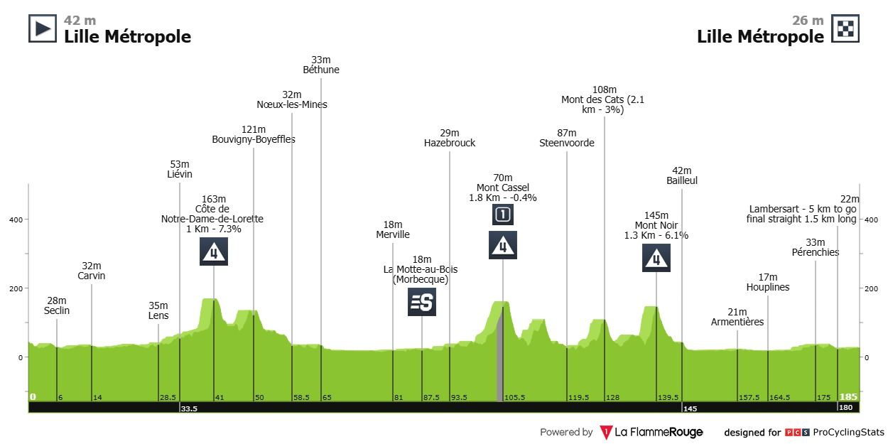
Chaotic sprint
Milan and Merlier have overtaken Phillipsen as the big-boy sprinters, but neither have MVDPs lead-out. Expect huge risks and big crashes.
Stage 2
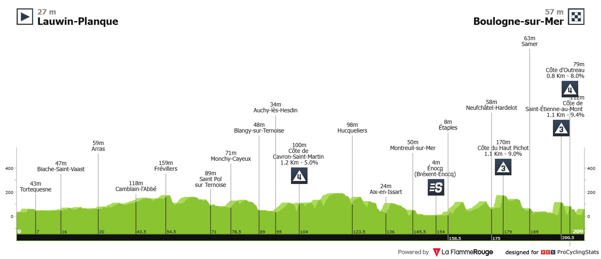
Punchy
Now we get our first look at the puncheurs. Every year I think MVDP will clean these, only for some to basically smoke darts mid stage. Will this be the year?
Stage 3
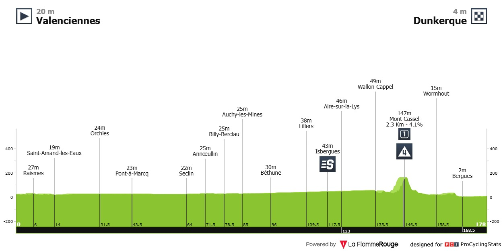
Flat
A second chance for the pure sprinters. Expect lead-out train carnage.
Stage 4
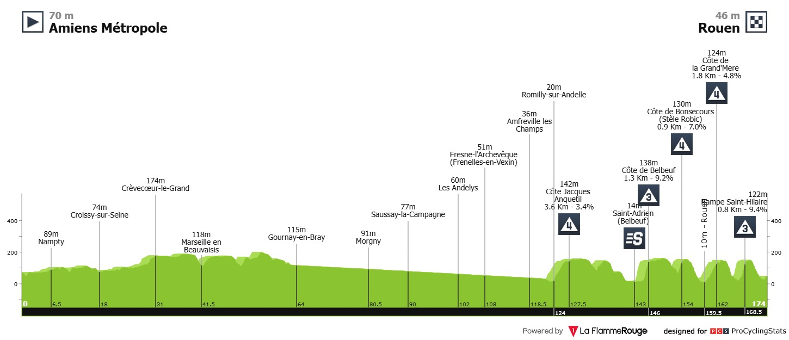
Punchy
This one’s a bit harder than stage 2. Pog and Jonas could punch away if given the proper lead-out. Remco struggles with positioning in these finishes, so he’ll be nervous.
Stage 5
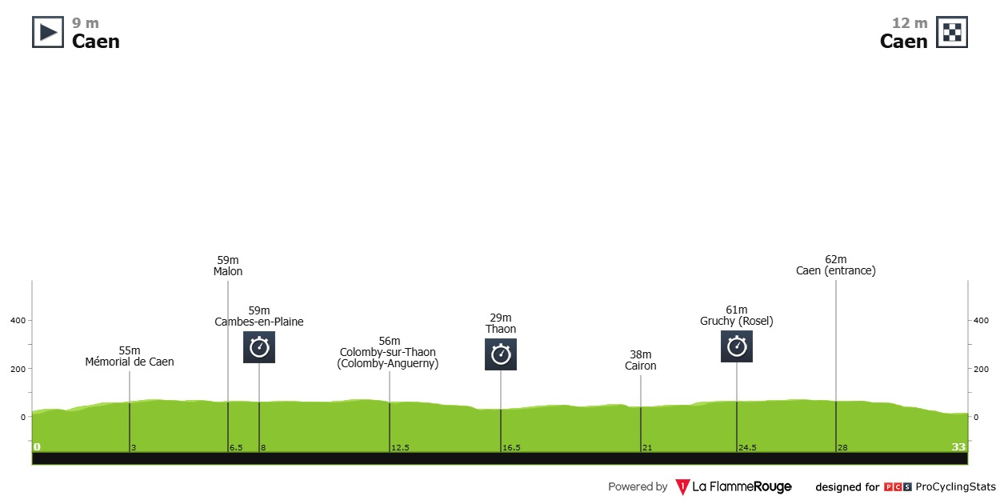
Flat time trial
A rare long tt in the modern tour era. Remco should clean this. Expect him to take a minute plus on Jonas and Pog. On pog, there’s controversy around UAE’s tt bike. He hated it in the Dauphine and wasn’t afraid to show his displeasure. Colnago under the pump.
Stage 6
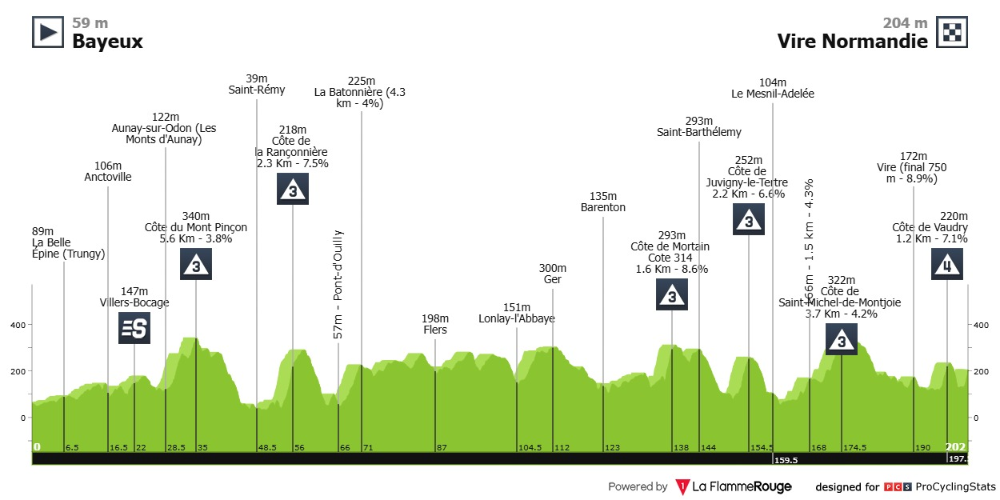
Punchy
A bit of a theme for the first week, with all these hilly finishes. I wonder whether we’ll be thinking seriously about Wout here. He won a similar stage in the giro in a 1v1 with Del Toro, but Pog and MVDP are different beasts
Stage 7
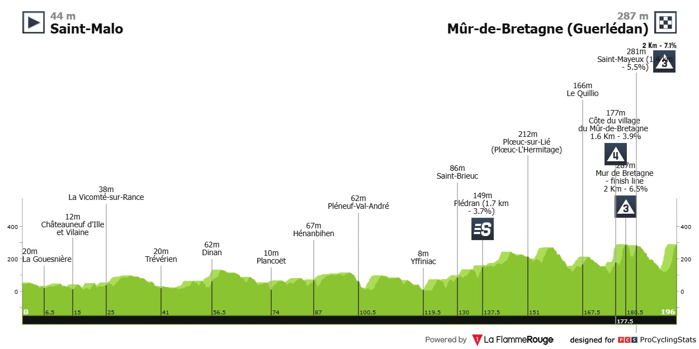
Punchy
Rise, repeat, just a little longer. Let’s go with Pog outsprinting Jonas on this one.
Stage 8
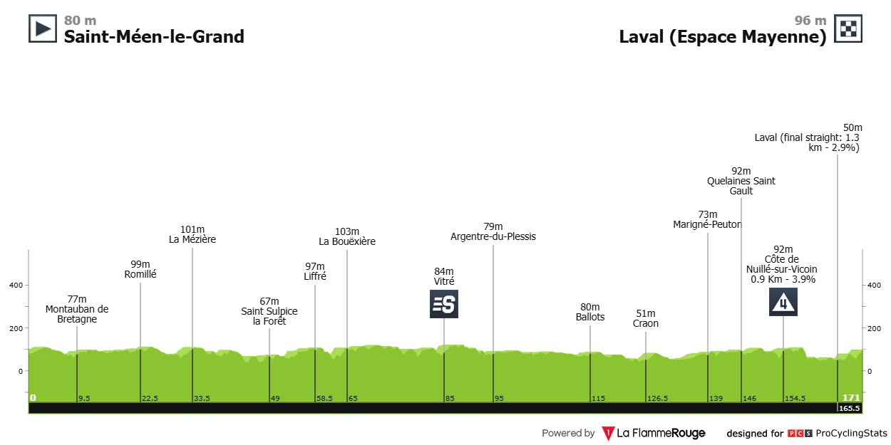
Flat
A bit of an uphill sprint but nothing too exciting. Get some sleep.
Stage 9
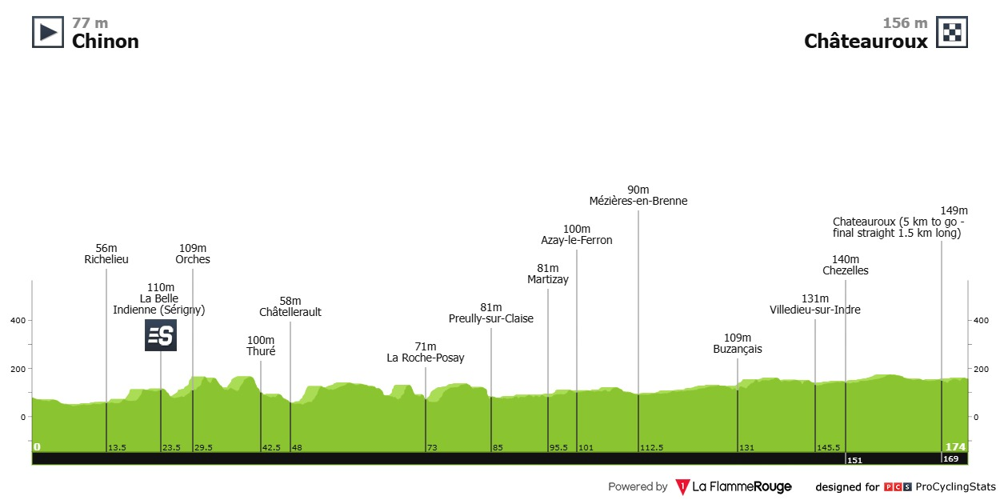
Flat
Another early night.
Stage 10
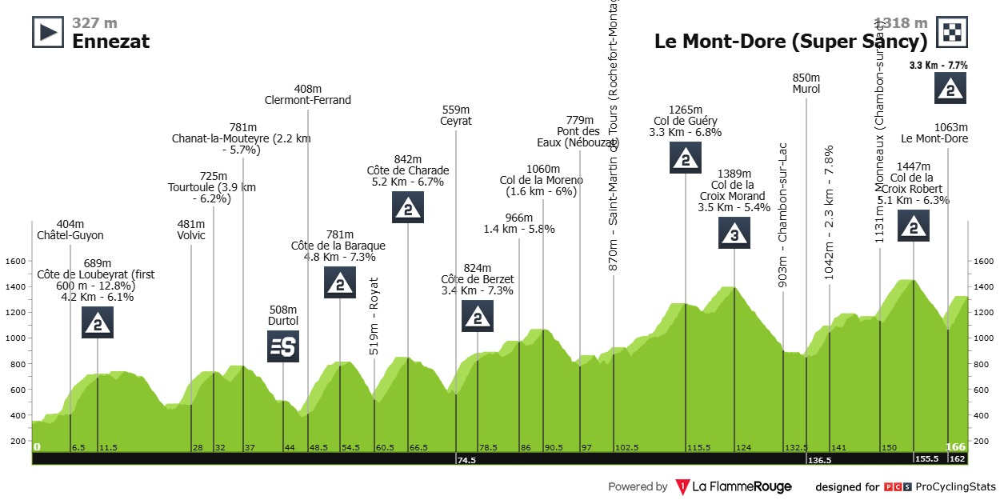
Mountains
The first mountain stage! Much later than last year, perhaps to make it appear like a close tour. This is the litmus test for Jonas. He must stay with Pog to be any chance. On paper also a good stage for Roglic, but Lipowitz might be Red Bull’s real GC man.
Stage 11
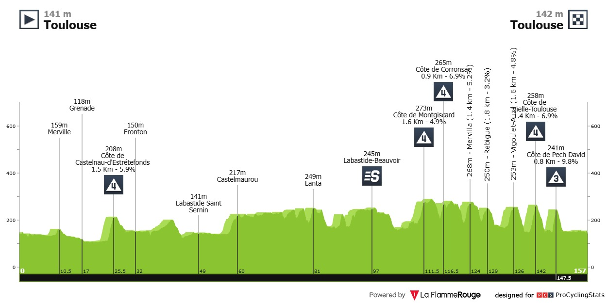
Punchy punchy
Nailed on Pog. Big points for the puncheurs this tour.
Stage 12
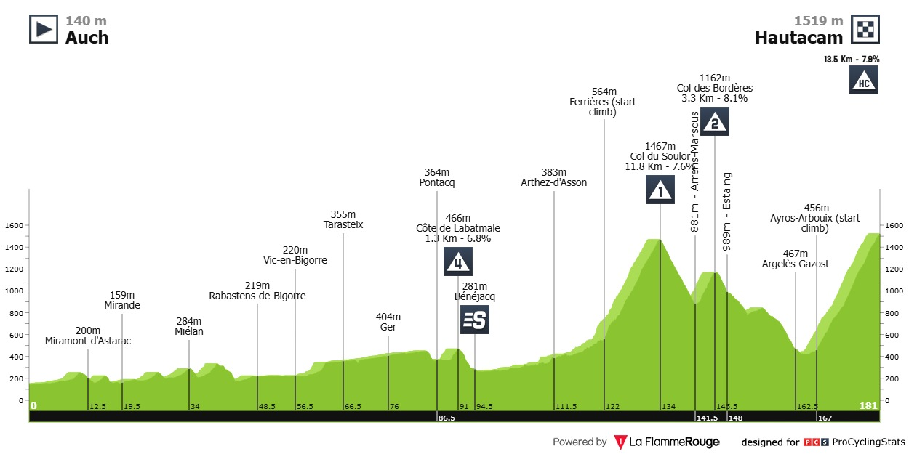
Pyrenees mountains
First real test. Remco should be in yellow here, but can he hold off a rampaging UAE and Visma?
Stage 13
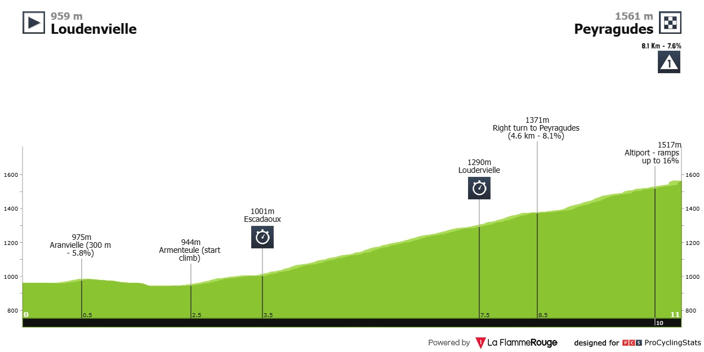
Uphill time trial
Interesting one. For whatever reason, I think Jonas wins.
Stage 14
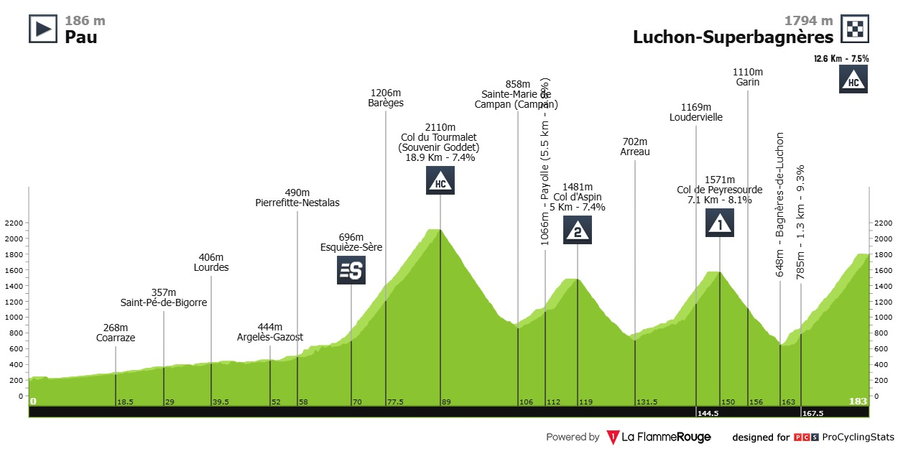
High pyrenees mountains
Big kilajoules day before a very hard final climb. Kilajoules burnt positively correlates with gc gaps so circle this one on the calendar. Expect some aggressive tactics from Visma. Will Simon Yates and Matteo Jorgenson actually matter?
Stage 15
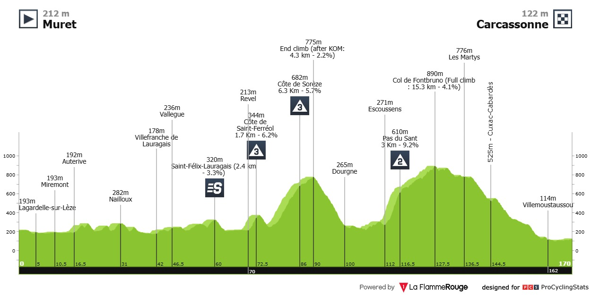
Transition stage
Breakaway. Where’s Johnny Hoogerland.
Stage 16
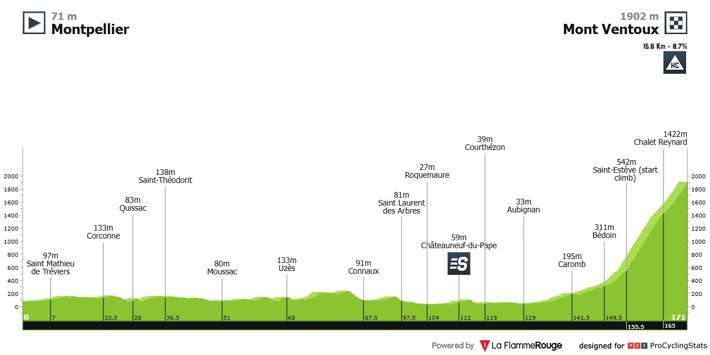
The bald mountain
In 2021 Jonas cracked Pog on Ventoux (and Wout somehow won the stage); the only time someone managed to do that for that whole year. Pog still win that tour handily, but for the debutant Jonas it was a sign of things to come. Will history repeat.
Stage 17
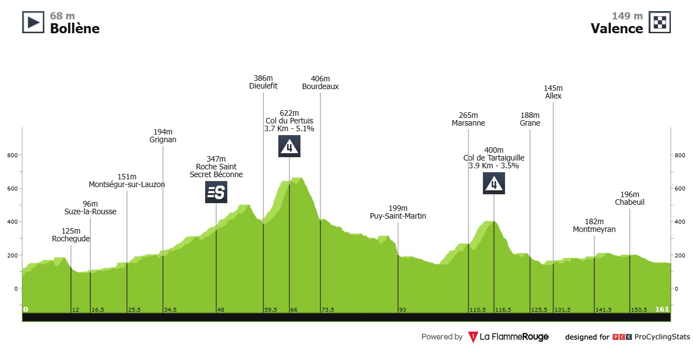
Flat
This tour is a sprinters hell. Today presents one of their few opportunities. Sprinters should not be highly valued on draft boards this year.
Stage 18
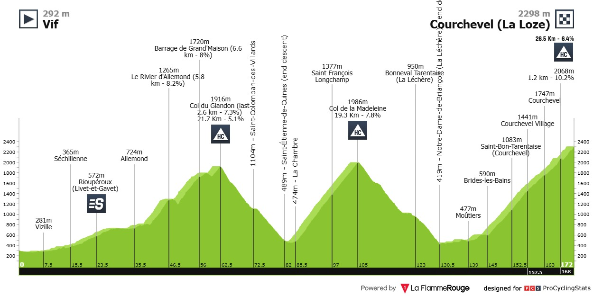
Queen stage
Two brutal warm-up climbs lead into the hardest climb in France. Pog uttered his famous “I’m dead” here in 2023 and proceeded to lose 5 minutes.
Stage 19
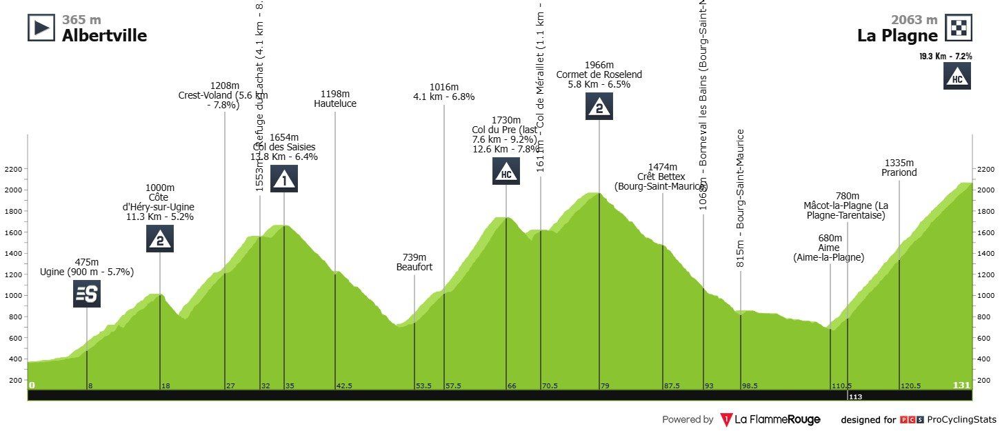
Extreme alps
I hope it’s still close, but my gut says Pog will have it sewn up by this point. So let’s list some top 5 GC smokies. I like one of Lenny, Onley or Johannessen if things break right, and Skjelmose to sneak in right at the end after three weeks in witness protection.
Stage 20
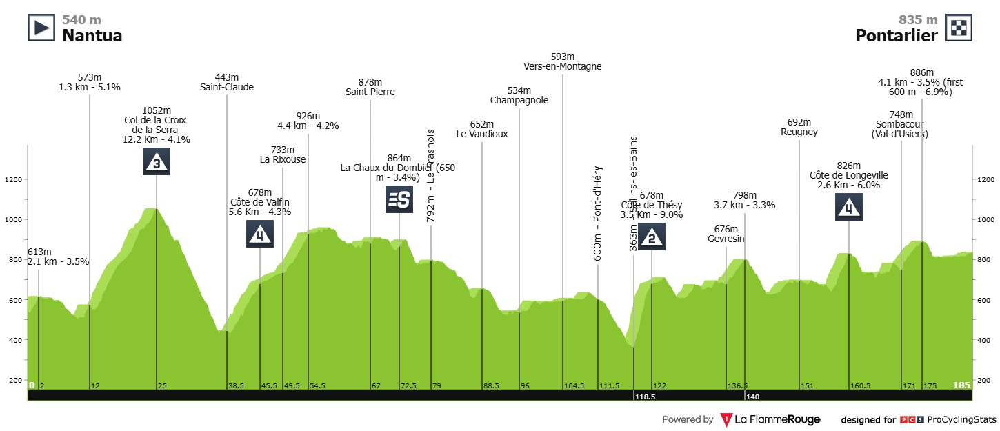
Transition day
The hard racing is over and it’s back to the surviving sprinters.
Stage 21
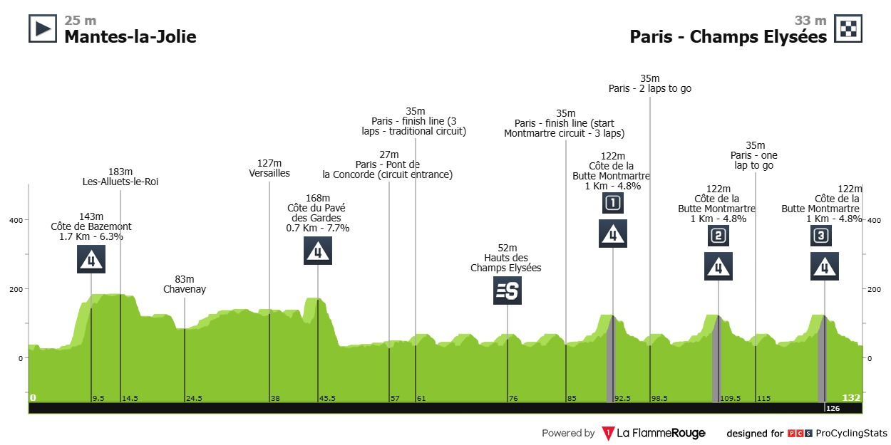
Punchy
The Champs returns but with a refreshing twist. This years final stage takes inspiration from the Olympic road race and includes the climb up to Sacre Coeur. Remco won that, so we could be in for an unpredictable, exciting finish. However, will they try?